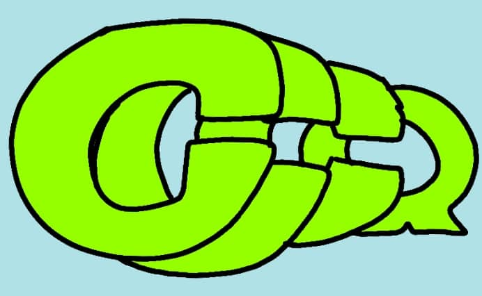
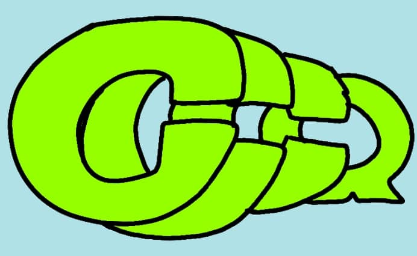

|
|
|

| "Exusiai is a citizen of Laterano and as such, is entitled to the privileges listed in Clauses 1-13 of the Laterano Constitution. She is a member of Penguin Logistics who specializes in covert communication, armed escort, and other undercover activities. Her public identity is that of a messenger. While contracted with Penguin Logistics, she served as a liaison to Rhodes Island, assisting them with their operations." -quoted from in-game |
| Exusiai is a character from the game Arknights. She is a member of the logistics agency, Penguin Logistics. She was born in the nation of Laterano, a nation known for making great desserts. She is also fond of apple pie, to the point where she says it out loud in combat. In-game, she is of 6-star rarity, the highest rarity available. She is part of the Anti-Air Sniper archetype, and is one of the three 6-stars of said archetype. |
| Exusiai makes an appearance in the first arc of the Main Story, where she helps out Rhodes Island in their mission. In a Side Story named "Code of Brawl", she plays a bigger role as one of the main protagonists. She also has some operator records where she's the main focus. |
|
Exusiai is an upbeat, generally cheery and optimistic young lady. As expected from a Sankta, (race based on angels) she has a burning passion for guns, and wishes for eight new guns when she is promoted. (When she is promoted again, her wish comes true!) She's often paired with her co-worker and partner Texas, who's the more level-headed and serious one in the duo. (In fact, in the entire group) As mentioned, she loves guns. Her files state that "she lacks the attention span for things other than maintaining and operating her gun. [...] Her innate marksmanship talents, including visual tracking and timing, are the envy of all sharpshooters." While it may not seem like it at first glance, she's actually very religious. Most, if not all Sankta follow the religion of their homeland, the Laterano religion. It's not obvious, but when the topic swirls to religion, it becomes very apparent. |
|
Exusiai was voted as the most popular operator in a poll. Why is that? First, a lot of people admire her from a gameplay perspective, as she deals a good amount of burst damage with little to no effort. In a character perspective, there's also something to cover. Exusiai's liveliness and energetic behavior is a fun part of her character, and her character design, while simple, is very memorable. She has also been quite memed in the Arknights community, mostly because of her signature voice line, "Apple pie!" which she yells out in battle.
There's also the fact that she is kind of insane. In lore, she once blew up her alma mater. However, she did not get into too much trouble because in her country, domestic terrorism is more or less legal. (The citizens all carry guns for self-defense, including her.) |
Sources:
|
Contact the authors:
|